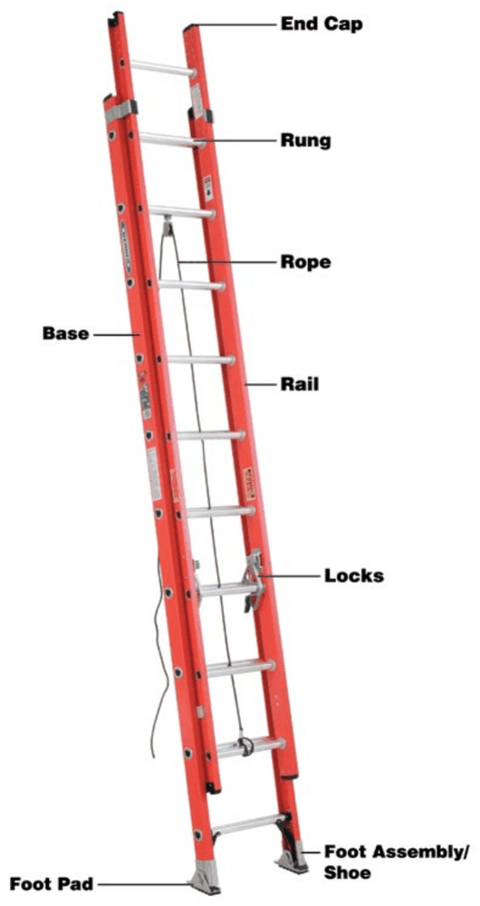
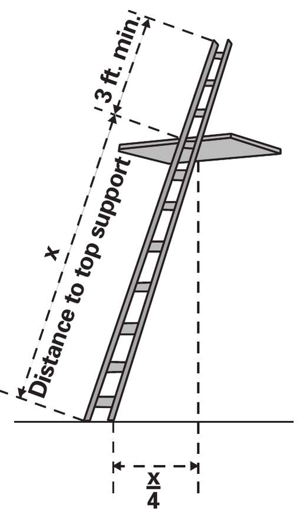
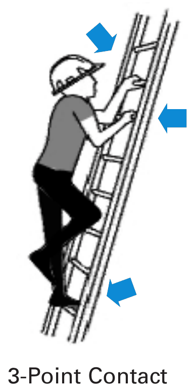
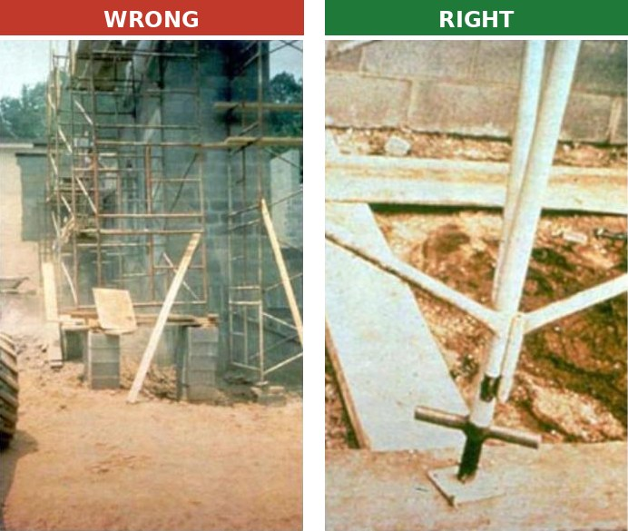
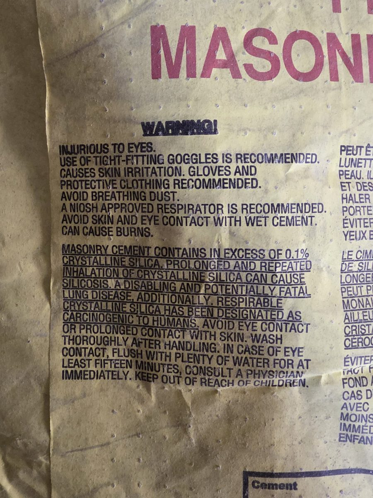
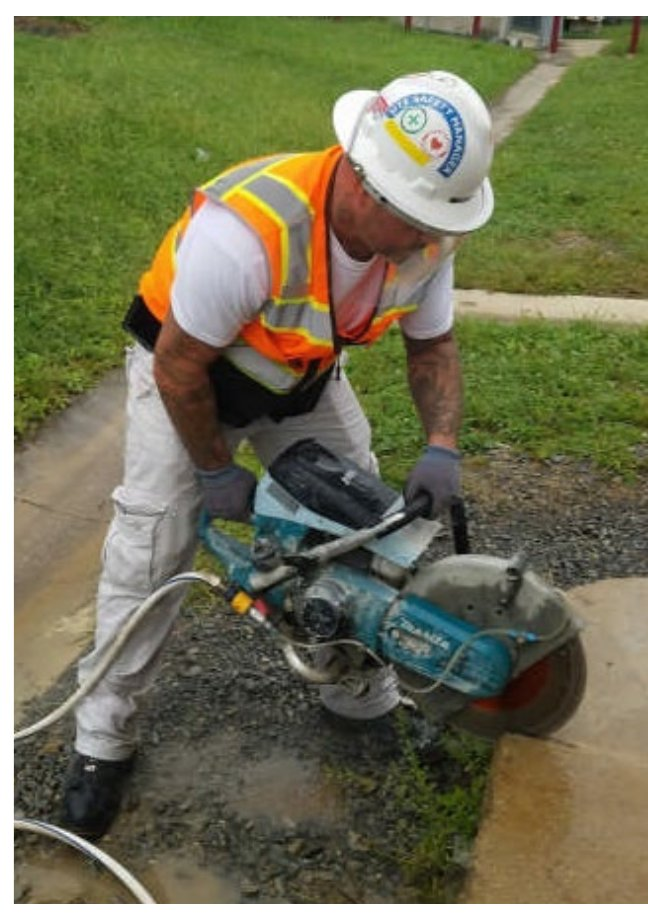

Common tasks and what Table 1 of the silica plan calls for
| Task | Control | Respirator |
|---|---|---|
| Masonry or cut-off saw | Water fed to the blade | N95 if used over 4 hours a shift |
| Grinder (concrete, mortar) | Shroud and HEPA vac | N95; longer runs may need a P100 |
| Hammer drill or core drill | Shroud or hollow bit and HEPA vac | None to N95 |
| Jackhammer or breaker | Water spray or HEPA vac | N95 outdoors, P100 indoors |
| Dry mixing mortar or concrete | Mix outdoors or with a vacuum hopper; pre-blended bags | N95 or P100, depending on conditions |